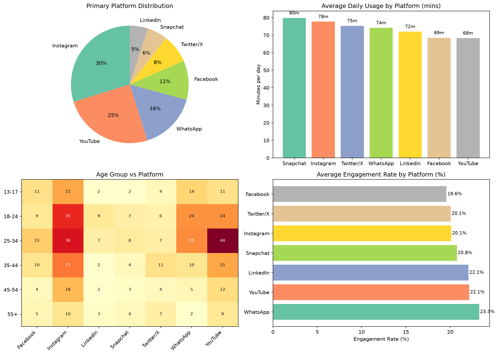

500 synthetic user profiles across 7 platforms. Analyzes platform preferences, daily usage patterns, engagement rates, and demographic trends.

Four-panel visualization: platform distribution, daily usage by platform, age group vs platform heatmap, and engagement rate by platform.
Hover over the pie chart for platform shares. Explore the relationship between daily usage and engagement rates.